와인(음료)쇼케이스
주류쇼케이스 여름철에 맥주가 덜 차가워지는 이유와 점검법
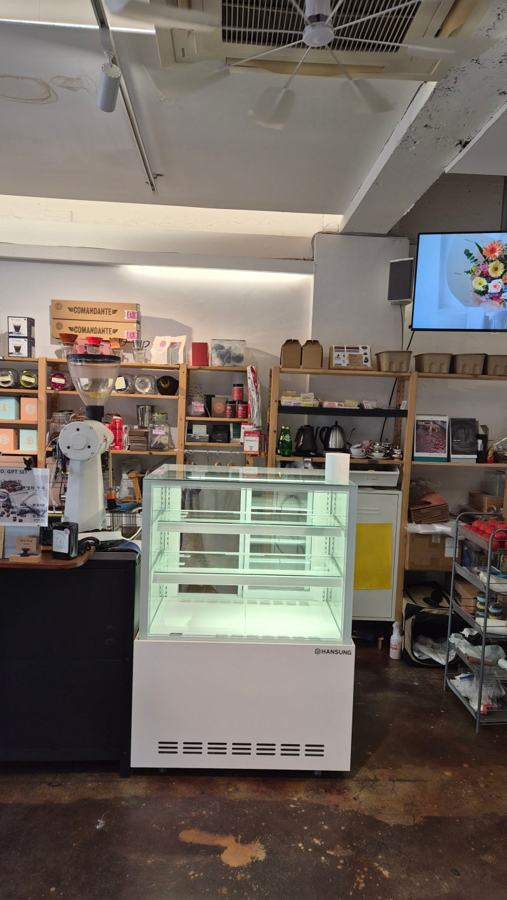
여름철 주류쇼케이스가 약해지는 이유는 바깥 기온이 올라 장비 부담이 커진 상태에서 문이 자주 열리고, 뒷면 열 배출과 냉기 순환이 막히기 때문입니다. 설정 온도를 더 낮추기보다 설치 공간, 진열 방식, 팬모터와 온도 제어 부품 상태를 먼저 점검하시는 편이 효과적입니다.
안녕하세요. 업소용 주류·음료 쇼케이스를 맞춤 제작하는 한성쇼케이스입니다.
날이 더워지면 호프집, 포차, 고깃집 사장님들께 비슷한 연락이 옵니다. "봄에는 괜찮았는데 요즘 저녁만 되면 손님들이 맥주가 미지근하다고 해요." 장비가 갑자기 고장 난 것 같아 걱정되시죠.
하지만 매장에 가 보면 고장보다는 여름이라는 조건과 운영 습관이 겹친 경우가 훨씬 많습니다. 여름은 주류 판매가 가장 많은 시기이면서 동시에 A/S 접수가 몰려 수리를 오래 기다려야 하는 시기이기도 합니다.
오늘은 여름철에 주류쇼케이스가 왜 힘이 빠지는지, 성수기 전에 무엇을 점검해 두면 좋은지 차례로 정리해 드리겠습니다.
1. 여름에 냉기가 약해지는 구조
쇼케이스는 안팎의 온도 차를 이기면서 내부를 식힙니다. 기온이 오르면 그 차이가 커져 압축기와 팬이 더 자주, 더 오래 돌아가야 같은 온도를 지킬 수 있습니다.
여기에 손님이 직접 술을 꺼내는 매장이라면 문이 열릴 때마다 차가운 공기가 빠져나가고 더운 공기가 들어옵니다.
유리문 제품은 구조상 앞쪽 온도 변화가 가장 큽니다. 그래서 저녁 피크 시간대에 앞줄 병부터 미지근해지고, 안쪽 병은 차가운 상태가 이어지는 현상이 생깁니다.
설정 온도만 더 낮추면 결로와 성에가 늘고 전기 사용만 많아지는 경우가 많습니다.
2. 설치 공간과 열 배출
여름에 가장 먼저 확인할 곳은 장비 뒤쪽입니다. 뒷면이나 옆면이 벽에 바짝 붙어 있으면 장비가 내보내는 열이 빠지지 못하고 다시 장비를 데웁니다.
주방 화구 근처나 햇볕이 드는 창가에 놓인 경우도 마찬가지입니다.
응축기 쪽에 먼지가 두껍게 쌓여 있으면 열 교환이 잘 되지 않습니다. 성수기 전에 한 번 청소해 두기만 해도 냉각이 한결 수월해집니다.
- 뒷면과 벽 사이에 열이 빠질 공간이 있는지 보세요.
- 응축기 먼지를 성수기 전에 청소해 두세요.
- 화구·창가처럼 열이 많은 자리는 피해 주세요.
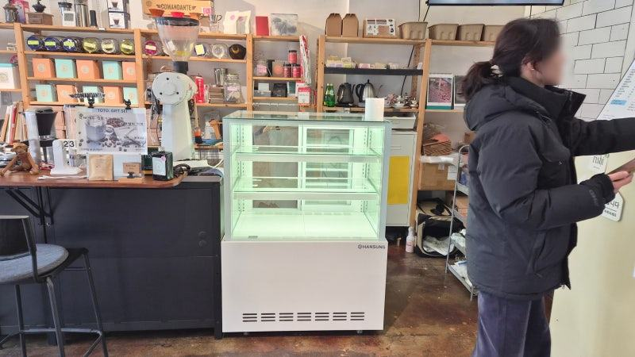
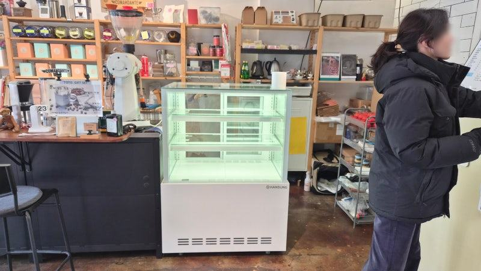
3. 진열 방식과 문 여닫는 습관
여름에는 입고량이 늘어 상온 맥주를 한꺼번에 앞줄에 채워 넣는 일이 잦습니다. 이러면 장비가 새 병을 식히는 동안 이미 차가워진 병까지 온도가 올라갑니다.
들어온 술은 뒤쪽 선반이나 다른 냉장고에서 먼저 식힌 뒤 앞으로 옮기는 순서를 정해 두세요.
냉기가 나오는 토출구와 들어가는 흡입구를 박스나 병으로 막지 않는 것도 중요합니다. 병 윗부분과 위 선반 사이에 공기가 지나갈 틈을 남겨 두어야 앞줄까지 냉기가 갑니다.
직원이 한 번에 여러 병을 꺼낼 수 있도록 동선을 정리하면 문이 열려 있는 시간이 짧아집니다. 내부에 온도계를 하나 두고 피크 시간대에 실제 온도를 확인해 보시면 설정값과의 차이를 알 수 있습니다.
4. 성수기 전 점검할 부품
현장에서 여름에 자주 교체되는 부품은 온도를 제어하는 TC와 냉기를 돌리는 팬모터입니다. 팬 소리가 평소와 다르게 덜컹거리거나, 온도 표시가 오르내리는 폭이 커졌다면 미리 점검을 받아 두시는 게 좋습니다.
문 패킹이 찢어지거나 들뜬 곳이 있으면 그 틈으로 더운 공기가 계속 들어옵니다. 종이를 문 사이에 끼우고 닫았을 때 쉽게 빠진다면 패킹을 확인해 보세요.
- 팬 소음과 진동이 평소와 같은지 들어 보세요.
- 온도 표시가 크게 오르내리지 않는지 보세요.
- 문 패킹이 찢어지거나 들뜬 곳이 없는지 확인하세요.
체크리스트
- 뒷면·옆면 열 배출 공간
- 응축기 먼지 청소
- 상온 입고 술 예비 냉각 순서
- 토출구·흡입구 막힘 여부
- 팬모터 소음과 온도 표시 변화
- 문 패킹 상태
현장에서 자주 보는 경우: 피크 시간에 앞줄 맥주만 미지근할 때
처음 채울 때는 충분히 차가웠는데 저녁 손님이 몰리면 유독 앞줄 병만 미지근해진다는 매장이 적지 않습니다.
가 보면 상온 맥주를 한꺼번에 앞쪽에 채웠거나, 냉기 토출구를 상품으로 가렸거나, 앞뒤 선반 간격이 너무 좁은 경우가 대부분입니다.
이런 매장에는 설정 온도를 낮추기보다 문이 열렸다 닫힌 뒤 얼마나 빨리 온도를 되찾는지를 기준으로 보시라고 말씀드립니다.
팬으로 냉기를 내부 전체에 돌리는 강제 순환 구조인지, 최대 적재 상태에서도 설정 온도를 지킬 만큼 여유 있는 능력인지가 여름 피크 타임을 버티는 열쇠입니다.
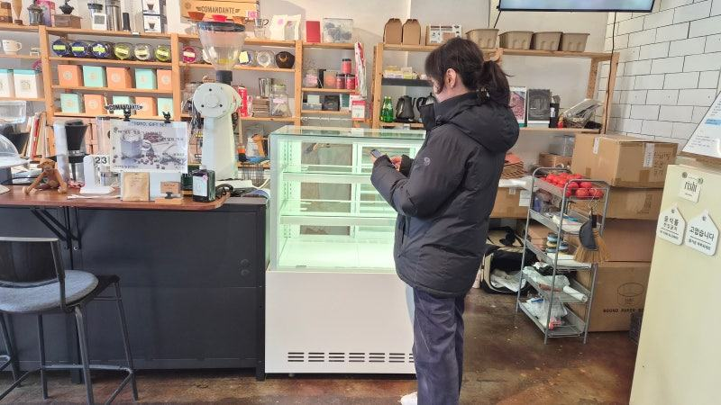
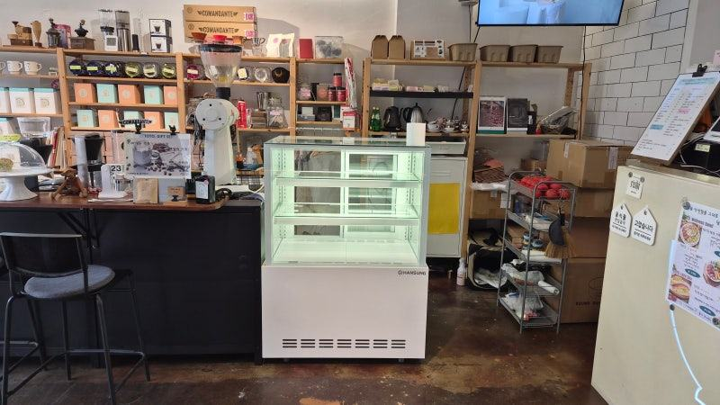
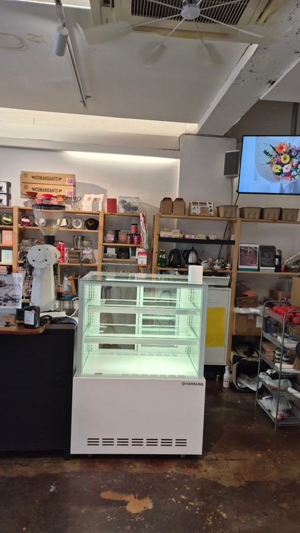
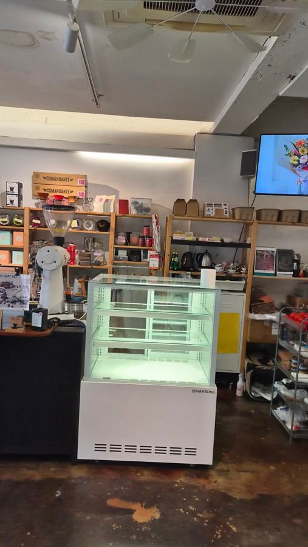
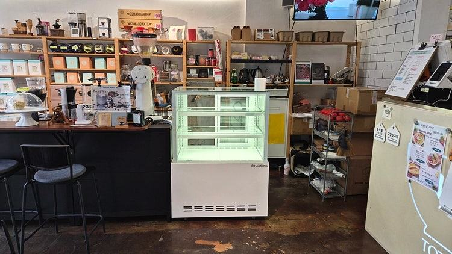
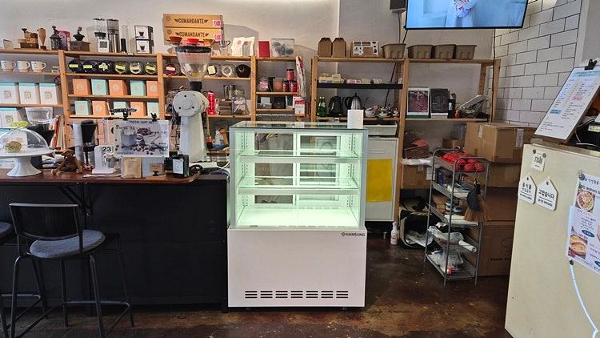
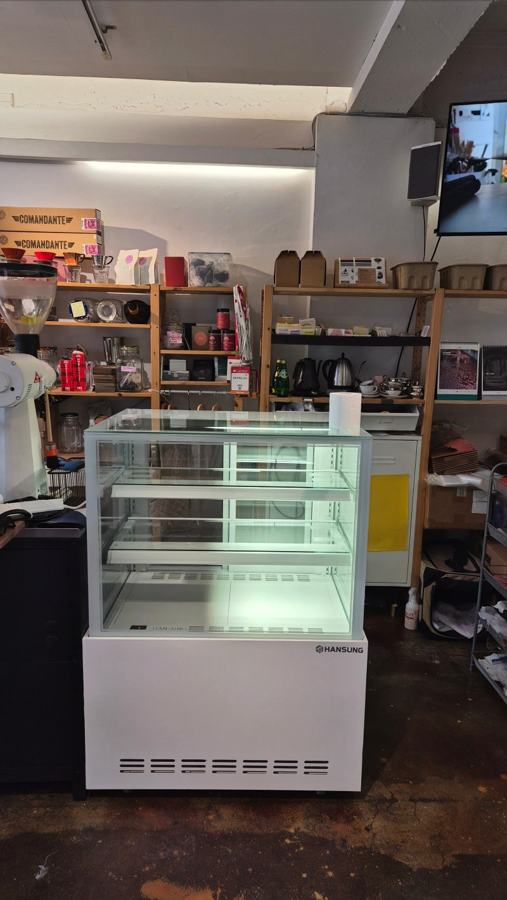
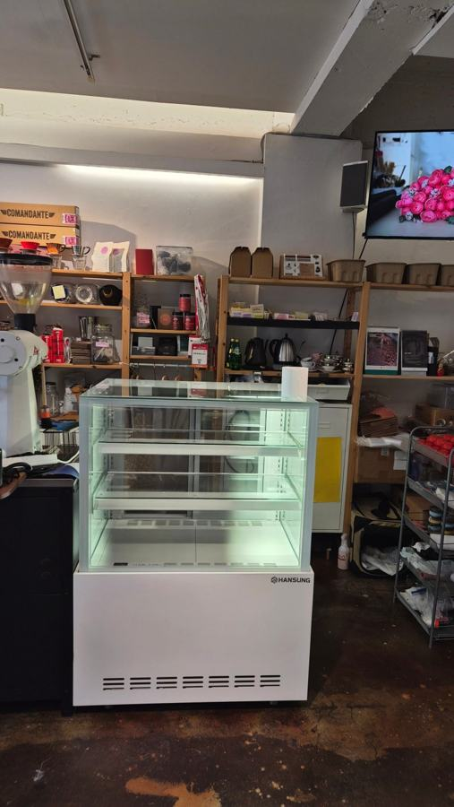
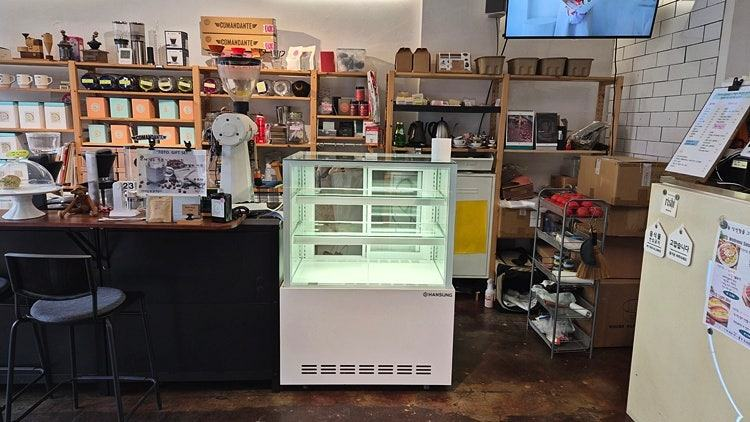

자주 묻는 질문
여름에는 설정 온도를 더 낮춰 두는 게 좋지 않나요?
지나치게 낮추면 냉각 시간이 길어지고 결로와 성에가 늘어 오히려 효율이 떨어집니다. 맥주는 너무 차가우면 거품이 잘 나지 않을 수 있으니, 설정은 유지하고 진열과 열 배출을 먼저 손보세요.
여름에 고장이 나면 수리를 오래 기다려야 하나요?
여름에는 접수가 몰리는 편이라 성수기 전에 미리 점검해 두시는 게 안전합니다. 한성쇼케이스는 전국 240여 개 A/S 센터를 통해 가까운 곳에서 접수하실 수 있습니다.
피크 시간에 강한 주류쇼케이스를 새로 맞추려면 무엇을 봐야 하나요?
강제 순환 냉각 구조, 앞뒤 선반 온도 차를 줄이는 송풍 설계, 문틀과 패킹 구조를 확인해 보세요. 하루 판매량과 매장 자리를 알려 주시면 그에 맞는 용량으로 안내해 드립니다.
매장 조건에 맞춰 만드는 한성쇼케이스
원하시는 제품 사진과 설치할 공간 사진만 보내 주셔도 매장에 맞는 구성을 추천해 드립니다.
- 전국 240여 개 A/S 전담 센터 운영
- 본사 대량 자재 매입으로 품질 대비 합리적인 가격
- 유럽제·삼성 냉각 콤프레셔 적용
- 국내 최초 쇼케이스 전문 디자이너 상주
매장 폭과 원하는 진열 구성을 알려 주세요. 실측과 견적을 안내해 드립니다.
031-986-2458